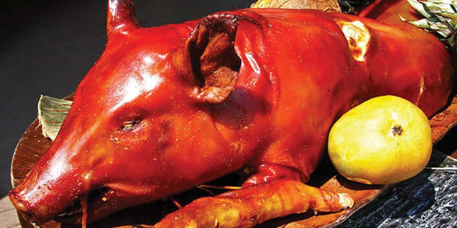
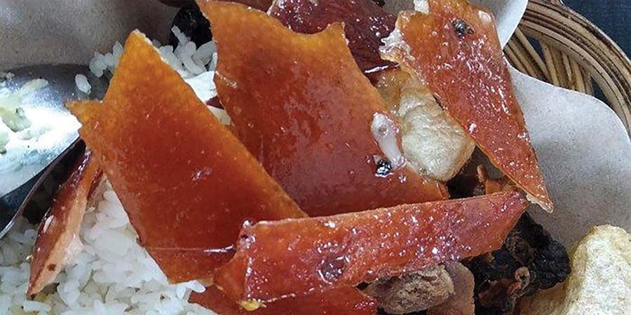
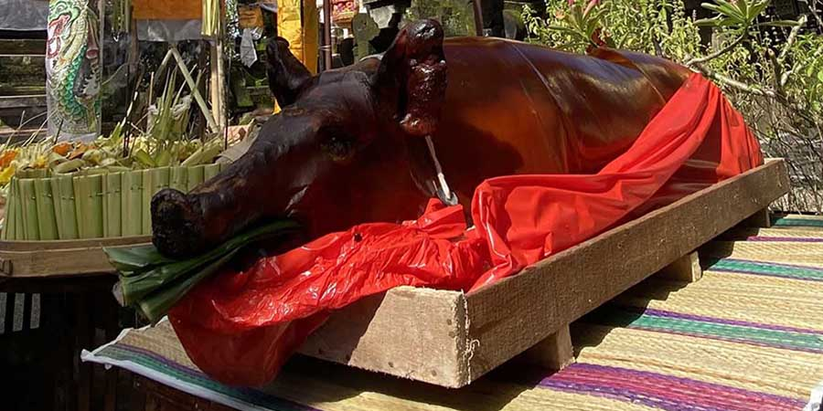

Babi Guling Sesaji
Kini, babi guling menjadi menu makan sehari-hari

Kulit Babi Guling
Bagian yang paling di cari-cari oleh penggemar babi guling..

Babi Guling untuk Upacara
Babi guling merupakan salah satu bagian dari tradisi juga memperkuat keyakinan agama masyarakat Bali.